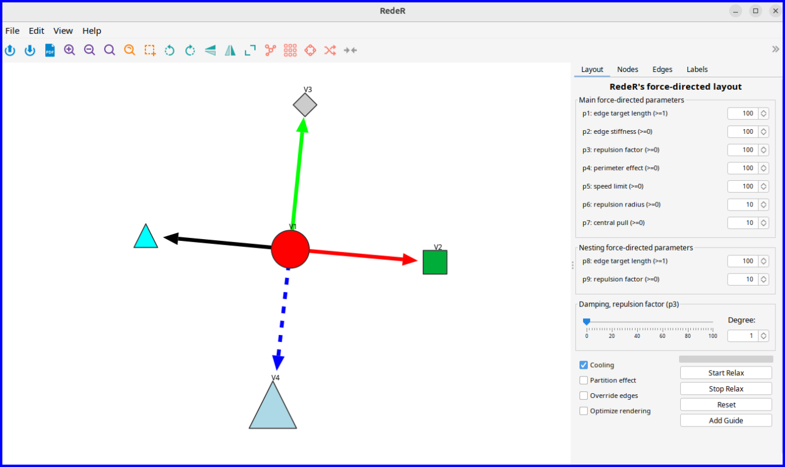

Interactive visualization
Sysbiolab Team
2026-06-24
Source:vignettes/articles/interactive.Rmd
interactive.Rmd
Package: RGraphSpace 1.4.1
# Check required version
if (packageVersion("RGraphSpace") < "1.4.1"){
message("Need to update 'RGraphSpace' for this vignette")
remotes::install_github("sysbiolab/RGraphSpace")
}Overview
While static plots are essential for documentation and publication, interactive visualization allows us to explore the local neighborhoods and global architecture of a network in real-time. By connecting RGraphSpace with specialized interactive tools, we can move beyond fixed layouts to dynamic manipulation.
The following example demonstrates interoperability between RGraphSpace and RedeR, an R/Bioconductor package for interactive network visualization and manipulation.
Required packages
# Install RedeR, a graph package for interactive visualization
if(!require("BiocManager", quietly = TRUE)){
install.packages("BiocManager")
}
if(!require("RedeR", quietly = TRUE)){
BiocManager::install("RedeR")
}System requirements
RedeR will need the Java Runtime Environment (JRE; version >=11). To ensure your environment is ready, you can check the installed Java version directly from R:
library("RedeR")
RedPort(checkJava=TRUE)
# RedeR will need Java Runtime Environment (Java >=11)
# Checking Java version installed on this system...
# openjdk version "21.0.10" 2026-01-20
# OpenJDK Runtime Environment (build 21.0.10+7-Ubuntu-124.04)
# OpenJDK 64-Bit Server VM (build 21.0.10+7-Ubuntu-124.04, mixed mode, sharing)
# Note: The output may vary, but ensure your system meets the minimum requirement.A ‘round-trip’ workflow
Before jumping into the interactive interface, we can use a standard RGraphSpace call to verify the graph’s structure and current layout. This provides a baseline for comparison once we start modifying the network dynamically.
library("RGraphSpace")
library("RedeR")
library("igraph")
data(gtoy1, package = "RGraphSpace")
plotGraphSpace(gtoy1, add.labels = TRUE)
The main advantage of this interoperability comes from the “round-trip” workflow. You can send a graph space to RedeR, use its force-directed algorithms to manually refine the layout, and then pull that updated geometry back into R for further analysis and plotting with ggplot2.
The following steps demonstrate the launch, manipulation, and retrieval process:
# Launch the RedeR application
startRedeR()
resetRedeR()
# Send 'gtoy1' to the RedeR interface
addGraphToRedeR(gtoy1, unit="npc")
relaxRedeR()
# Fetch 'gtoy1' with a fresh layout
gtoy1_2 <- getGraphFromRedeR(unit="npc")
# Check the round trip...
plotGraphSpace(gtoy1_2, add.labels = TRUE)
## Note that for the round trip, shapes and line types are
## partially compatible between ggplot2 and RedeR.
# ...alternatively, just update the graph layout
gtoy1_2 <- updateLayoutFromRedeR(g=gtoy1)
# ...check the updated layout
plotGraphSpace(gtoy1_2, add.labels = TRUE)
Fine-tuning large graphs
Large networks often present layout challenges. In such scenarios, automated static layouts may not resolve visual clutter, making interactive adjustments essential for graph clarity and spatial organization.
The following example demonstrates how to layout a large modular graph using a combination of automated and interactive refinement.
Graph initialization
We first generate a sample network with predefined modules to simulate a cluttered system. This provides a baseline to evaluate the combination of global layout algorithms and local manual adjustments.
# Make a large modular graph
nmod = 20
size = 50
gtoy2 <- sample_islands(
islands.n = nmod, # number of modules
islands.size = size, # nodes per module
islands.pin = 0.25, # edges within modules (prob)
n.inter = 5) # edges between modules
# Assign module membership
V(gtoy2)$module <- rep(seq_len(nmod), each = size)
# Assign colors and node size
V(gtoy2)$nodeColor <- rainbow(nmod)[V(gtoy2)$module]
V(gtoy2)$nodeSize <- 2
# Initialize a 'GraphSpace', using 'layout_with_kk' to
# generate initial global coordinates
gs_gtoy2 <- GraphSpace(gtoy2, layout = layout_with_kk(gtoy2))
plotGraphSpace(gs_gtoy2)
Interactive refinement
The layout can then be fine-tuned interactively:
# Launch the RedeR application
startRedeR()
resetRedeR()
# Send 'gtoy2' to the RedeR interface
addGraphToRedeR(gs_graph(gs_gtoy2), unit="npc")
#--- Fine-tune the force-directed layout:
# p1: edge target length (default = 100)
# p2: edge stiffness (default = 100)
# p5: node movement limit (default = 100)
relaxRedeR(p1 = 10, p2 = 50, p5 = 1)
# Update the graph layout
gtoy2_2 <- updateLayoutFromRedeR(g = gs_graph(gs_gtoy2))
# ...check the updated layout
plotGraphSpace(gtoy2_2, add.labels = FALSE)
Session information
#> R version 4.6.0 (2026-04-24)
#> Platform: x86_64-pc-linux-gnu
#> Running under: Ubuntu 24.04.4 LTS
#>
#> Matrix products: default
#> BLAS: /usr/lib/x86_64-linux-gnu/openblas-pthread/libblas.so.3
#> LAPACK: /usr/lib/x86_64-linux-gnu/openblas-pthread/libopenblasp-r0.3.26.so; LAPACK version 3.12.0
#>
#> locale:
#> [1] LC_CTYPE=en_US.UTF-8 LC_NUMERIC=C
#> [3] LC_TIME=en_US.UTF-8 LC_COLLATE=en_US.UTF-8
#> [5] LC_MONETARY=en_US.UTF-8 LC_MESSAGES=en_US.UTF-8
#> [7] LC_PAPER=en_US.UTF-8 LC_NAME=C
#> [9] LC_ADDRESS=C LC_TELEPHONE=C
#> [11] LC_MEASUREMENT=en_US.UTF-8 LC_IDENTIFICATION=C
#>
#> time zone: America/Sao_Paulo
#> tzcode source: system (glibc)
#>
#> attached base packages:
#> [1] stats graphics grDevices utils datasets methods base
#>
#> other attached packages:
#> [1] igraph_2.3.2 RedeR_3.8.0 RGraphSpace_1.4.1 ggplot2_4.0.3
#>
#> loaded via a namespace (and not attached):
#> [1] sass_0.4.10 generics_0.1.4 tidyr_1.3.2 lattice_0.22-9
#> [5] digest_0.6.39 magrittr_2.0.5 evaluate_1.0.5 grid_4.6.0
#> [9] RColorBrewer_1.1-3 fastmap_1.2.0 jsonlite_2.0.0 Matrix_1.7-5
#> [13] ggrastr_1.0.2 purrr_1.2.2 scales_1.4.0 textshaping_1.0.5
#> [17] jquerylib_0.1.4 cli_3.6.6 rlang_1.2.0 tidygraph_1.3.1
#> [21] withr_3.0.2 cachem_1.1.0 yaml_2.3.12 otel_0.2.0
#> [25] ggbeeswarm_0.7.3 tools_4.6.0 dplyr_1.2.1 vctrs_0.7.3
#> [29] R6_2.6.1 lifecycle_1.0.5 fs_2.1.0 htmlwidgets_1.6.4
#> [33] vipor_0.4.7 ragg_1.5.2 pkgconfig_2.0.3 beeswarm_0.4.0
#> [37] desc_1.4.3 pkgdown_2.2.0 pillar_1.11.1 bslib_0.11.0
#> [41] gtable_0.3.6 glue_1.8.1 systemfonts_1.3.2 xfun_0.58
#> [45] tibble_3.3.1 tidyselect_1.2.1 rstudioapi_0.18.0 knitr_1.51
#> [49] farver_2.1.2 htmltools_0.5.9 rmarkdown_2.31 labeling_0.4.3
#> [53] compiler_4.6.0 S7_0.2.2